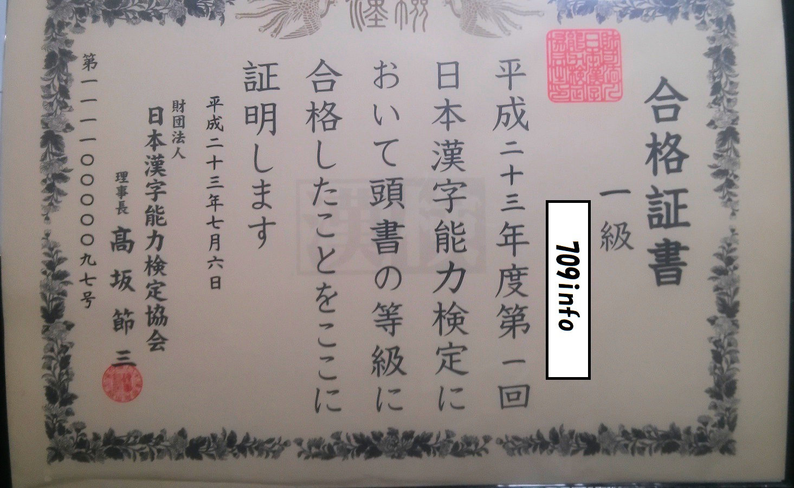

( =`ω´=)・・・
( ´･ω･)ん?
(´･ω･`)
(´･ω･`)
「・・・どうも」
(´･ω･`)
「709infoです。」
(´･ω･`)
「学生です。」
(´･ω･`)
「難読漢字マニア(自称)です。」

(´-ω-`)
「漢字が好きすぎて高2で
(´･ω･`)
「そんな私のお話です。」
(´･ω･`)
「では、どうぞ。↓」
＜漢検一級合格までの道のり＞
当時の私は中学2年で、これといって特徴のない子供でした。
基本的に無気力で、熱中できるものもない。
そんな私が、ある時突然
漢字ドリルに一度なぞり書きした字を消してもう一度綺麗に書いたり、
漢字辞典で「踏」の字を調べて、全く覚える必要のない「踏鞴(たたら)」を
ノートに書き留めたり、
挙句の果てには、
謎の暴挙に出ました。
私が読み込んでいたポケット辞書の一つ。
小サイズですが収録語数が多い優秀な辞書です。
自分でもなぜそんなことをしたのかは分かりません。
でもおそらく、私はそのとき
そのまま私は義務教育範囲の最難関である
※当時、私の中学では教育の一環として漢検を受けさせる制度がありました。
そして今の実力を知るために試しに二級の本試験をノー勉で受検した結果、
なぜか受かってしまいました。
それ以来、私は周りから
一目置かれるようになった(気がする)。
正直、自分の漢字好きを認めてもらえたのがうれしかった。
そして高校に上がり、私の漢字に対する執着は
よりいっそう強まりました。
しかし、私のクラスにはとんでもないクラスメイトがいたのです。
衝撃でした。
自分より漢字マニアな人がいたことに。
そして、
もちろん、漢字好きの度合いは漢検の級だけでは決まりません。
でも、周りの人からしたら絶対的な指標は
私が何と言おうと
悔しくなった私は、ある決断をしました。
同じ級を取っても仕方がない、
その一心でした。
とにかく我武者羅に漢字を覚えまくりました。
よく「漢検一級は
漢字辞典を愛読している私には決してそうは思えませんでした。
愛読していた漢字辞典の一つ。
こういう特殊な漢字(「丯」とか)を見たとき何とも言えない
恍惚を感じませんか？感じないですか、はいすみません・・・
もちろん、ただ流し読みしただけでは
覚えられないので、
完璧に覚えるために
今まではそれとなく眺めていた辞典も、
ちゃんとノートに書き写して本気モードです。
1つの漢字ごとに１、２単語書き留め、
あとはひたすら覚えるという戦法です。
恐らく、人生で一番頑張ったと思います。
元から漢字に対して
一度覚えた単語はほぼ忘れることはありませんでした。
とはいえ相手は漢検界の魔宮殿、
そう易々と私に扉を開けてはくれません。
１度目の得点は
２度目の得点は
「何で下がってんだ」と思われるかもしれませんが、
漢検一級ならよくあることです。
そして３度の受検の末、
辛くも受かりました。
得点は
ギリギリ合格なので余裕とまでは言えませんが、
それでも十分満足でした。
※今もそうですが、私は「
あくまで「漢検一級合格者」の肩書きが欲しかっただけなので、
多分もう漢検は受けないと思います。
「えっ、マジで！？凄すぎ！！」
「ヤバいなそれ」
クラスでも
それどころか、先生にも一目置かれるようになった。
本当、受かってよかった。
あと、これは自慢すべきなのか
恥ずべきなのか分かりませんが、
実は
恐らく漢検１級受検者なら必ず持っているはずの
漢検界の牙城に挑んでいたわけです。
今思えばホントに型破りというか奇抜というか・・・
そんなこんなで、
奇妙な経歴を持つ(自称)漢字マニアが
誕生したわけです。
話は変わりますが、
私が
※自慢話をするわけではありません。
私は決して頭の良い人間ではありません。(むしろ逆)
特殊な勉強法がある訳でもありません。
ただ、
「漢検一級」って、そういうものだと思います。
「漢字は特別好きじゃないけど、勉強したら漢検一級取れた」
なんて人は本当の意味で
でも私は、
今思えば、漢字を
あくまで
そして漢検一級というものは、
努力だけで取れる資格ではない
もっと言うと、
のみが取れる資格であるべき
ただ「凄い」って思われたいだけなら
司法試験や英検一級とかの方が実用的だろうし、
就活でも優遇されると思います。
一方で漢検一級の知識は実用的かというと、
お世辞にもそうとは言えません。
※「丫(あげまき)」を実際に使っている人なんて見たことありません。
世間の人からは「学んでも無駄な知識」と
見なされるかもしれません。
でも私は胸を張ってこう言います。
「何かに役立てるために学んだ」んじゃなくて、
私は
ただし、「凄い人」としてではなく、